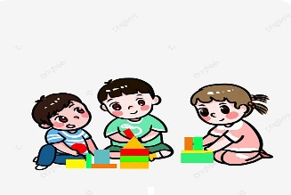
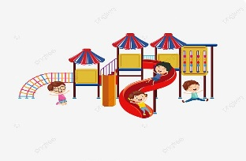
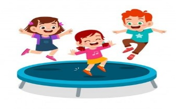

เว็บไซต์นี้สร้างมาเมื่อวันที่ 9 มิถุนายน พ.ศ. 2569
โดยเว็บไซต์นี้สร้างมาเพื่อโรงเรียนและการเรียนรู้ต่างๆของเด็กๆ ที่จะเข้าดูการศึกษาต่างๆของโรงเรียนนี้
แนะนำการเรียนการสอนต่างๆในแต่ละช่วงวัย และ สมรรถภาพต่างๆ ในหลายๆด้าน
ด้านสังคม (Social): เปิดโลกการเรียนรู้ร่วมกับผู้อื่น สร้างมิตรภาพ และความมั่นใจในตัวเอง
ด้านร่างกายและกล้ามเนื้อ (Motor): กิจกรรมฝึกประสาทสัมผัส การมองเห็น และการเคลื่อนไหวที่คล่องแคล่ว
ด้านภาษาและการสื่อสาร (Language): ฝึกฝนการฟัง การพูด และสื่อสารความคิดสร้างสรรค์อย่างมีประสิทธิภาพ
ด้านการปรับตัวในชีวิตประจำวัน (Adaptive): เรียนรู้การพึ่งพาตัวเอง และการแก้ปัญหาในสถานการณ์ต่างๆ อย่างชาญฉลาด